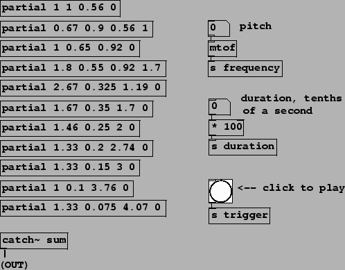
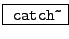
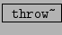

The abstraction mechanism of Pd, which we used above to make a reusable ADSR generator, is also useful for making voice banks. Here we will use abstractions to organize banks of oscillators for additive synthesis. There are many possible ways of organizing oscillator banks besides those shown here.
The simplest and most direct organization of the sinusoids is to form partials to add up to a note. The result is monophonic, in the sense that the patch will play only one note at a time, which, however, will consist of several sinusoids whose individual frequencies and amplitudes might depend both on those of the note we're playing, and also on their individual placement in a harmonic (or inharmonic) overtone series.
Example D07.additive.pd (Figure 4.16) uses a bank of 11 copies of an abstraction named partial (Figure 4.17) in an imitation of a well-known bell instrument by Jean-Claude Risset. As described in [DJ85, p. 94], the bell sound has 11 partials, each with its own relative amplitude, frequency, and duration.
|  |
For each note, the partial abstraction computes a simple (quartic) amplitude envelope consisting only of an attack and a decay segment; there is no sustain or release segment. This is multiplied by a sinusoid, and the product is added into a summing bus. Two new object classes are introduced to implement the summing bus:
:
define and output a summing bus. The creation argument (``sum-bus" in this example)
gives the summing bus a name so that throw~ objects below can refer
to it. You may have as many summing busses (and hence catch~ objects)
as you like but they must all have different names.
:
add to a summing bus. The creation argument selects which summing bus to
use.
The control interface is crude: number boxes control the ``fundamental" frequency of the bell and its duration. Sending a ``bang" message to the s trigger object starts a note. (The note then decays over the period of time controlled by the duration parameter; there is no separate trigger to stop the note). There is no amplitude control except via the output~ object.
The four arguments to each invocation of the partial abstraction specify: